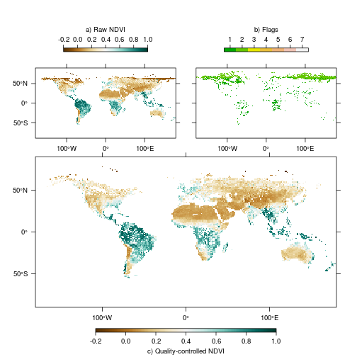

Quality control
Using the default settings, rasterizeGimms creates proper Raster* objects from the ENVI binary images. Associated with each half-monthly NDVI3g dataset is a quality flag layer indicating the data reliability on a pixel basis. The flag values are as follows (taken from http://ecocast.arc.nasa.gov/data/pub/gimms/3g.v0/00READMEgeo.txt):
| Flag value | Description |
|---|---|
| 1 and 2 | good value |
| 3 | value derived from spline interpolation |
| 4 | value derived from spline interpolation, possibly snow |
| 5 | value derived from average seasonal profile |
| 6 | value derived from average seasonal profile, possibly snow |
| 7 | missing value |
Quality control can easily be carried out by invoking the function qualityControl which works both on binary files and already rasterized images. With regard to memory usage, however, we strongly advice to create NDVI and flag layers separately via rasterizeGimms (with filename provided) and use these as input for qualityControl.
ndvi <- rasterizeGimms(gimms_files[1])
flag <- rasterizeGimms(gimms_files[1], flag = TRUE)
qc <- qualityControl(ndvi, flag)
